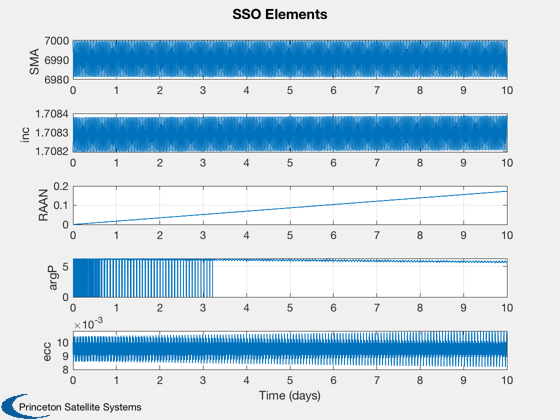
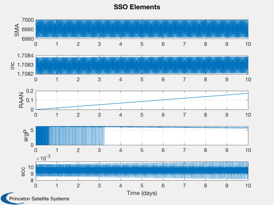

Contents
A Sun-Synchronous orbit Demo
The reduced J2 effects model of Wiesel (J2OrbitEffects) is used to determine the state of an initial orbit after some time. A full numerical integral (J2Prop) is used to confirm the reduced model. The semi-major axis, inclination, and eccentricity will oscillate, while the node will precess.
See also: SunSyncInclination, J2OrbitEffects, LoadGravityModel, J2Prop, RVFromKepler
%-------------------------------------------------------------------------- % Copyright (c) 2019 Princeton Satellite Systems, Inc. % All rights reserved. %-------------------------------------------------------------------------- % Start in a circular, sun-synchronous orbit at this radius: rInitial = 7000; % km % Initial eccentricity eInitial = 0.01; % Consider this duration of orbit: duration = 10*24*60*60; % seconds fprintf('Initial radius is %.3g km. \n',rInitial); [tNumR,~,tUnitR] = TimeLabl(duration); fprintf('Duration is %.3g %ss: \n',tNumR,tUnitR);
Initial radius is 7e+03 km. Duration is 10 days:
Create a sun-synchronous orbit. WDot should be (2*pi/365.2421897)/86400
gM = LoadGravityModel( 'load file', 'GEMT1.geo' ,false); iSync = SunSyncInclination(rInitial,eInitial, abs(gM.j(2)), gM.mu, gM.a); el0 = [rInitial iSync 0 0 eInitial 0];
Evaluate the elements' changes with an analytical model
[wDot, WDot, thDot] = J2OrbitEffects( el0(1), el0(5), el0(2), abs(gM.j(2)), gM.mu, gM.a ); dWDot = WDot - (2*pi/365.2421897)/86400; fprintf('WDot is %.3g rad/s, relative drift of %.3g rad/s. \n',WDot,dWDot); fprintf('wDot (periapsis) is %.3g rad/s. \n',wDot); el1 = el0 + [0 0 duration*WDot duration*wDot 0 0];
WDot is 1.99e-07 rad/s, relative drift of -1.85e-22 rad/s. wDot (periapsis) is -6.59e-07 rad/s.
Compare evaluated elements to a full integrator result
fprintf('Performing an integration for comparison... (~5 minutes) \n') % Elements of SSO after duration [R0,V0] = El2RV(el0); t0 = rand*365; % should be independent of start time jD0 = JD2000+t0; tVec = 0:60:duration; tic x0 = J2Prop([R0;V0],jD0,tVec,gM,[2 0]); toc el1Num = RV2El(x0(1:3,end),x0(4:6,end),gM.mu); [R1Num,V1Num] = RVFromKepler(el1Num,[],gM.mu); [R1,V1] = RVFromKepler(el1,[],gM.mu); elSet = RVSet2El(x0(1:3,:),x0(4:6,:),gM.mu);
Performing an integration for comparison... (~5 minutes) Elapsed time is 2.945495 seconds.
Plot
NewFig('Sun Synchronous Orbit') hold on; [R0,V0] = RVFromKepler(el0); plot3(R0(1,:),R0(2,:),R0(3,:),'LineWidth',2) plot3(R1(1,:),R1(2,:),R1(3,:),'LineWidth',2) plot3(R1Num(1,:),R1Num(2,:),R1Num(3,:),'--','LineWidth',2) plot3(x0(1,:),x0(2,:),x0(3,:)); axis equal grid on rotate3d on legend('Initial','Final (simp)','Final (num)','History (num)') Plot2D(tVec/86400,elSet(:,1:5)','Time (days)',{'SMA','inc','RAAN','argP','ecc'},'SSO Elements') disp([el0;el1;el1Num]) %--------------------------------------
Columns 1 through 3
7000 1.70819501126498 0
7000 1.70819501126498 0.172027916937537
6988.1632573094 1.7083214792377 0.172905019563252
Columns 4 through 6
0 0.01 0
-0.56908610887515 0.01 0
5.71839689980482 0.0105303035792106 2.77566436826508
 
